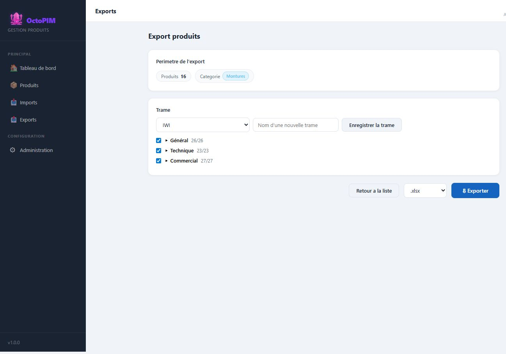

Fonction d’export
Extraire une trame du catalogue. Catalogue, IWI ou une trame enregistree : la meme liste de cases. On decoche un groupe, ou on le deplie pour retirer un champ.
Qu’est-ce que l’export ?
Un fichier .xlsx dont les colonnes portent l’identifiant d’attribut (pas le libelle, trop instable pour un echange). Le perimetre reprend les filtres de la liste (categorie, recherche, selection).

A quoi ça sert ?
- Donner un extrait de travail (acheteur, agence, controle qualite).
- Produire une trame reimportable (memes identifiants qu’a l’import).
- Pont transitoire vers Snowflake / autres outils tant que les interfaces ne sont pas en place.
Comment ça marche
L’export produit un fichier du perimetre deja filtre dans la liste, pour le reimporter ou pour IWI. Seuls les produits des categories en lecture partent. Catalogue, IWI et les trames enregistrees se reglent de la meme facon.
- Choisir une trame. Catalogue, IWI et chaque trame enregistree s’affichent pareil : un groupe, une case, un compteur de champs coches. On deplie pour decocher un champ.
- IWI propose ses trois sections (General, Technique, Commercial) et ses 76 colonnes, dans l’ordre de la trame d’import, y compris les colonnes vides. On peut ensuite en retirer, comme sur Catalogue. Une trame enregistree depuis IWI garde ce choix.
- Le fichier a un seul onglet. La premiere ligne porte le nom du groupe ou de la section, la seconde les en-tetes.
- Le format se choisit a cote du bouton : .xlsx, .csv, ou .zip (le zip contient le classeur).
- Le nombre de produits est celui du fichier. Une selection de la liste le reduit. « Tout exporter » revient aux filtres.
- Sur une colonne IWI exigee et encore cochee, un manque s’affiche en rouge : « 1 valeur manquante » ou « N valeurs manquantes ». L’export n’est pas bloque.
Regles
RG-EXP-01 — Une seule feuille. Ligne 1 : nom de groupe ou de section, seulement sur la premiere colonne du bloc. Ligne 2 : identifiant d’attribut (Catalogue) ou intitule IWI.
RG-EXP-02 — Le perimetre est celui des filtres. Une selection le reduit. « Tout exporter » revient aux filtres.
RG-EXP-03 — Seuls les produits des categories en lecture sont exportes.
RG-EXP-04 — Une colonne IWI exigee, si elle reste cochee et qu’il manque des valeurs, affiche en rouge « N valeurs manquantes ». L’export part quand meme.
RG-EXP-05 — Prix 2 = prix catalogue, 2 decimales. Prix 1 = PA ATS, 2 decimales. Distributeur fixe : ATS, Audioptic Trade Services. Action fixe a 1. Date de modification = date du jour. Date de creation = date de creation du produit.
RG-EXP-06 — Decocher un groupe decoche ses champs. Un champ present dans deux groupes part si au moins un de ces groupes reste coche.
RG-EXP-07 — Toute trame, y compris une trame enregistree, se regle avec les memes cases. L’enregistrement memorise les groupes et les champs coches. Le format se choisit au moment de l’export.
RG-EXP-08 — Les nombres sortent avec le nombre de decimales de l’attribut (0 par defaut, 2 pour les prix et les PA, 0 pour le prix final arrondi).
RG-EXP-02 — Le perimetre est celui des filtres. Une selection le reduit. « Tout exporter » revient aux filtres.
RG-EXP-03 — Seuls les produits des categories en lecture sont exportes.
RG-EXP-04 — Une colonne IWI exigee, si elle reste cochee et qu’il manque des valeurs, affiche en rouge « N valeurs manquantes ». L’export part quand meme.
RG-EXP-05 — Prix 2 = prix catalogue, 2 decimales. Prix 1 = PA ATS, 2 decimales. Distributeur fixe : ATS, Audioptic Trade Services. Action fixe a 1. Date de modification = date du jour. Date de creation = date de creation du produit.
RG-EXP-06 — Decocher un groupe decoche ses champs. Un champ present dans deux groupes part si au moins un de ces groupes reste coche.
RG-EXP-07 — Toute trame, y compris une trame enregistree, se regle avec les memes cases. L’enregistrement memorise les groupes et les champs coches. Le format se choisit au moment de l’export.
RG-EXP-08 — Les nombres sortent avec le nombre de decimales de l’attribut (0 par defaut, 2 pour les prix et les PA, 0 pour le prix final arrondi).
Cible
Job serveur, historisation des exports, formats vers Cosium / Osmose a specifier.